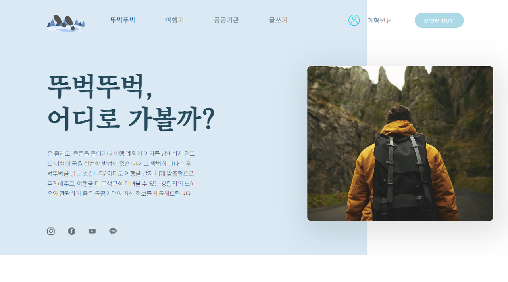
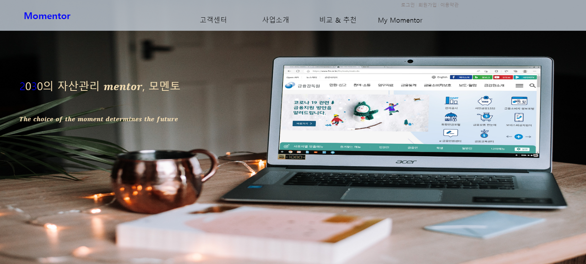

| About me | Skill Set | Introduction | Project |
| Info | ||||
|---|---|---|---|---|
| 성명(한/영) | 이형빈 / LeeHyeongBin | 생년월일 | 1998.06.02 (만 24세) | |
| 연락처 | 010-4068-8310 | leehb602s@naver.com | ||
| 블로그 | https://developer-leehb.tistory.com/ | 깃허브 | https://github.com/leehb602 | |
| 주소 | 인천광역시 부평구 동수천로 71 (부평동, 부평SKVIEW해모로아파트) | |||
| University | ||||
|---|---|---|---|---|
| 2017.03 ~ 2023.03 | 원광대학교 | 컴퓨터소프트웨어공학과 | (3.69/4.5) | 졸업 |
| Certificate | ||
|---|---|---|
| 2022.06 | 정보처리기사 | 한국산업인력공단 |
| Education | |||
|---|---|---|---|
| 2022.09 ~ 2023.03 | [멀티잇] 채용연계 풀스택 개발자 취업캠프(java) |
수강 중 | 멀티캠퍼스 |
- Java 기반의 풀스택 웹 개발, 챗봇 및 데이터수집 AI학습 |
|||
- 크롤링과 AI를 사용하여 사용자에게 금융 상품을 추천하는 웹 기획 및 배포 |
|||
- Java를 사용한 알고리즘 설계 및 코드 응용력 강화 |
|||
- Spring 프레임 워크 및 JQuery, JavaScript를 학습하여 MVC패턴을 이해하고 Back-End 기술 역량 강화 |
|||
| 2022.07 ~ 2022.07 | 처음 시작하는 JAVA 프로그래밍 |
수료 | 비트교육센터 |
- 자바 프로그램을 객체 지향으로 만드는 방법 학습 |
|||
- 데이터베이스와 Java간의 연결을 통해 실무에 적용 가능한 프로그램 작성 |
|||
- 객체 지향언어에 대한 이해 및 코드설계 능력 향상 |
|||
| Awards | |||
|---|---|---|---|
| 2022.11 | 1차 미니프로젝트_프론트엔드 프로그래밍 | 최우수상 | 멀티캠퍼스 |
| 2022.12 | 2차 미니프로젝트_백엔드 프로그래밍 | 최우수상 | 멀티캠퍼스 |
| 구분 | Skill | 내용 |
| Programing Languages | Java, JavaScript (●●●) HTML, CSS (●●○) |
풀스택 웹 개발 경험, 다양한 알고리즘 설계 가능 |
| Framework / Library | JQuery (●●●) Spring (●●●) |
AJAX를 사용하여 다양한 서비스 구현 가능, MVC패턴을 이용한 프로젝트 경험 |
| Server | MySQL (●●○) Firebase (●○○) |
데이터 테이블 관리, 테이블간 연관성 설정 가능 |
| Tooling / DevOps | GitHub(●○○) | 깃을 사용하여 프로젝트 관리 경험 보유 |
| 지원동기 및 입사 후 포부 |
|---|
|
학부시절 C언어를 처음 배우며 코딩에 흥미를 느끼게 되었고Java, Python 등의 다양한 언어를 배운 것을 토대로 프로젝트를 진행해보며 데이터를 담아 보낼 알고리즘을 설계하고 DB에 저장하는 것에 재미를 느껴 백엔드 개발자가 되기를 희망했습니다. 백엔드는 코딩 중 발생하는 오류 및 코드 구조가 직관적이고, 동일한 결과임에도 다양한 알고리즘 설계가 가능하여 사람마다 해결 방법이 다르다는 점이 가장 매력적이라고 느껴졌습니다. 또한 개발 중에 막히는 부분이 있더라도 잠깐의 답답함 보다 그 문제를 해결하는 과정 및 해결이 되었을 때 행복이 더 큰 점이 개발자로서 가장 큰 장점이라고 생각합니다. 저는 기업에 입사하여 많은 사람들과 문제없이 협업하는 능력으로 회사에 기여하겠습니다. 팀프로젝트 및 스터디를 진행하며 나와는 다른 사람들과 함께 코딩하는 것을 경험하였고, 경험을 토대로 어떠한 사람들이든 쉽게 적응한 후 함께 개발해 나갈 수 있는 사원이 되겠습니다. |
| 지원 분야와 관련하여 전문성을 키우기 위해 노력한 경험 |
|
1) 데이터 수집 및 저장능력 – 크롤링 핀테크 프로젝트에서 JSOUP과 selenium을 사용하여 홈페이지 데이터를 수집 및 DB에 저장하였습니다. 크롤링을 통해 수집한 데이터를 AITems를 사용하여 AI를 통한 사용자 추천 알고리즘을 사용했고, 사용자에게 맞는 데이터를 자동으로 추천할 수 있는 사이트를 개발하였습니다. 2) 코드 응용 능력 – 여행기 커뮤니티 사이트를 만들며 코딩능력을 향상시키다. 채용연계 풀스택 개발자 취업캠프에서 배운 Java, JS, Spring을 토대로 팀프로젝트를 진행하였습니다. 최대한 인터넷 서칭을 지양하고 배운내용만을 응용하여 Ajax를 활용한 비동기식 댓글기능, 회원가입, 유저별 프로필기능을 개발했고 MySQL서버에 데이터를 저장하며 관련 능력을 한층 더 업그레이드 시킬 수 있었습니다. 3) 끊임없는 배움과 협업능력 - 국비교육을 수료하며 팀 프로젝트를 진행하다. 희망하는 백엔드 개발자를 위해 필수 요소인 Java언어를 더 공부하기 위해 비트교육센터의 [처음 시작하는 JAVA 프로그래밍]교육을 수료하였으며, JS, Spring 등 다양한 언어를 배우기 위해 멀티캠퍼스의 [채용연계 풀스택 개발자 취업캠프] 교육을 수료하며 배운 내용을 토대로 진행한 팀 프로젝트에서 최우수상을 수상하였습니다. |
| 공동의 목표를 달성하기 위해 팀워크를 발휘한 경험 |
|
프로젝트 특성을 파악하고 룰을 만들어 팀프로젝트를 원활하게 진행한 경험이 있습니다. 채용연계 풀스택 개발자 취업캠프 수강중 팀 프로젝트를 진행했습니다. 이 과정에서 개발 속도가 다른 팀원에 비해 느려 원활한 진행이 힘든 팀원이 보였습니다. 저는 이를 해결하기 위해 개발이 느리게 진행된 원인을 파악하였고, 팀원에게 물어보는 것이 힘들거나 본인이 해결할 수 있을 것 같아서 연구하다 보니 시간이 흘렀다는 이유를 들을 수 있었습니다. 그러하여 저는 혼자서 자료를 찾으며 코딩을 진행하였을 때 2시간이 지나도 진행사항이 없으면 그것은 스스로 해결하기 어려운 일이므로 팀원들에게 바로 도움을 요청하기라는 <2시간룰>을 만들었고, 그 결과 물어보는 것에 대한 부담감 없이 서로를 도와가며 주어진 시간 내에 프로젝트를 완성했고 최우수상을 수상하였습니다. 프로젝트를 진행하며 모두 다른 팀원들의 성향을 빠르게 파악하고 그에 맞는 대처를 하는 것이 중요하다는 것을 느꼈습니다. 서로를 모른 채로 팀프로젝트를 진행할 경우 원하는 결과를 도출할 수 없기 때문입니다. 이 경험을 바탕으로 기업에 입사 후에도 업무 환경이나 함께 일하는 사람들의 성향을 파악하고 그에 맞는 대처를 하도록 하여 모든 업무에 문제없이 수행할 수 있도록 노력하겠습니다. |
| 직무 외 자신만의 특이한 경험, 재능, 장점 등을 소개해 주세요 |
|
저는 학부시절 동기들과 함께 학교에서 과제를 해야했던 적이 많았습니다. 하지만 모여서 할 장소가 강의실밖에 없었고 강의중인 곳과 문이 잠겨 있는 곳을 제외한 적합한 곳을 찾기 위해 20분이상 돌아다녀야 했습니다. 그 과정에서 저는 학교 강의실을 예약 후 이용할 수 있는 간단한 홈페이지를 만들면 좋겠다고 생각하였고 친구들과 강의실 예약 서비스 홈페이지를 만들었습니다. 기초지식이 없는 상태로 다양한 강의 및 유튜브를 보며 html과 css, JS 등의 언어를 공부하여 프론트엔드를 구성하였고, firebase를 사용하여 데이터베이스를 연결 및 데이터를 어떻게 구성하고 관리해야하는 지 공부하여 백엔드를 구성하여 홈페이지를 완성했습니다. 이러한 경험을 통해 저는 스스로 정보를 찾아 그것을 응용할 수 있는 법을 배웠으며, 기업에 입사한 후 끊임없이 공부하고 사용자의 입장에서 편의성을 제공하는 소프트웨어를 개발하고 싶습니다. |
| 1) 여행기 프로젝트 - 뚜벅뚜벅 |
|---|
|  |
| 프로젝트 개요 이동하기 |
| 프로젝트 코드설명 이동하기 |
| GitHub링크 이동하기 |
| 2) 자산관리 플랫폼 - 모멘토(money&mentor) |
|---|
|  |
| 프로젝트 개요 이동하기 |
| 프로젝트 코드설명 이동하기 |
| GitHub링크 이동하기 |